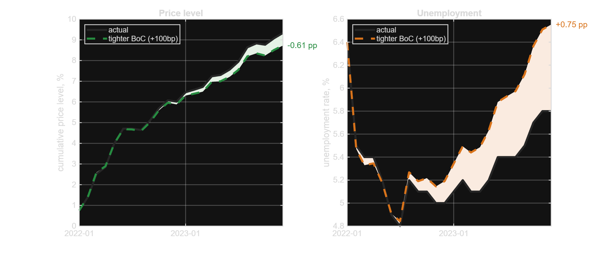

Code, replications, and side projects that sit outside my main research agenda.
Conditional Forecasts and Risk Scenarios


Description
A self-contained MATLAB package that replicates and then extends the risk-scenario exercise of Moran, Stevanovic and Surprenant (2025), Bank of Canada Staff Working Paper 2025–28, Risk Scenarios and Macroeconomic Forecasts. A monthly Bayesian VAR for Canada is estimated under a Minnesota prior, and alternative paths for selected variables are imposed with the Waggoner–Zha conditional-forecasting algorithm. The extension is about uncertainty: scenarios are reported as fan charts rather than single lines, with confidence bands that separate the shock uncertainty available in closed form from the parameter uncertainty drawn from the posterior. The toolbox also handles softly-held conditions, joint multi-variable scenarios — such as a stagflation path that fixes prices and unemployment simultaneously — and historical counterfactuals that re-run the sample with a single structural shock overridden. An interactive browser dashboard lets you build scenarios and counterfactuals live and watch the bands update, and a companion methods note works through every derivation, including the implications of the Cholesky timing restrictions used for identification. Canadian data come from Statistics Canada and FRED; the code needs no MATLAB toolbox and runs under Octave.